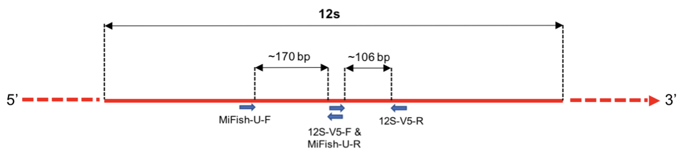

Chapter 12 Analysing the second primer pair
The sequencing data files we have analysed for the marker MiFish-U also contain sequences for a second marker, 12S-V5.
Both of these primer pairs amplify up short regions of the 12S gene. As shown below, the 12S-V5 region neighbours that amplified by the MiFish-U primers, and has a shorter expected length.

It can be common to use multiple genes or multiple markers of the same gene in metabarcoding studies. Depending on the taxa that you are targeting, multiple primer pairs can complement each other by increasing taxonomic coverage or resolution.
12.1 The primer sequences
Below are the forward and reverse primer sequences for 12S-V5.
FWD2 <- "ACTGGGATTAGATACCCC"
REV2 <- "TAGAACAGGCTCCTCTAG"Here are the primer sequences again, but formatted so they are a little easier to read. When you type them into R though you should do this with no spaces, as above.
12S-V5 FWD: ACT GGG ATT AGA TAC CCC
12S-V5 REV: TAG AAC AGG CTC CTC TAG
There is also a fasta reference database file for 12S-V5, which is here:
/pub39/tea/nsc006/NEOF/metabarcoding_workshop/taxonomy/12S-V5_Reference_Database_taxonomy.fasta
Run through the pipeline for the 12S-V5 primer pair, starting from identifying and removing the primers and through to the further diversity analyses.
Start by making a new notebook called “DADA2_analysis_pipeline_12S-V5_primer_set”.
Try to work through this on your own using the commands run for the MiFish-U primers as a guide. You will be able to copy and paste commands from your MiFish-U notebook. However, if you do get stuck with any of the code then you can look at the next section for help.
The questions below will hopefully help guide your interpretation of the different processing steps and output. Answers/discussion can also be found in the next section under each of the relevant headings.
12.2 Questions
Primer orientation checking
- Do we see the same pattern of the orientation of the 12S-V5 primers in the forward and reverse reads as we did for the MiFish-U primers? If not, why do you think this is?
Checking the data quality
- Is the sequence data of similar quality to the MiFish reads? Are there any differences you can notice between the quality plots for the MiFish-U and 12S-V5 sequences?
Cleaning the data
- How many of the samples have fewer than 1000 clean reads remaining after quality trimming? Are these the same samples with low sequence numbers as those for the MiFish primers?
Making the ASV matrix and chimera removal
- How many ASVs are identified for the 12S-V5 primer data, and how many non-chimeric ASVs? Does this number differ from the number for the MiFish data, and if so why do you think this could be?
Sequence tracking sanity check
- How many samples have low sequence numbers, and does this include our two negative samples (S62 and S72)?
Assigning taxonomy
- How many of the top six ASVs have species-level taxonomic assignments?
Alpha diversity
- How do the measures of alpha diversity compare between MiFish-U and 12S-V5, in terms of level of diversity and variability within sampling site?
- Does our filter negative control sample have low or high diversity compared to the actual samples?
Beta diversity
- How does the proportion of taxonomically unassigned reads compare between the 12S-V5 and MiFish ASVs?
- Does the negative filter control sample resemble any of the other samples?